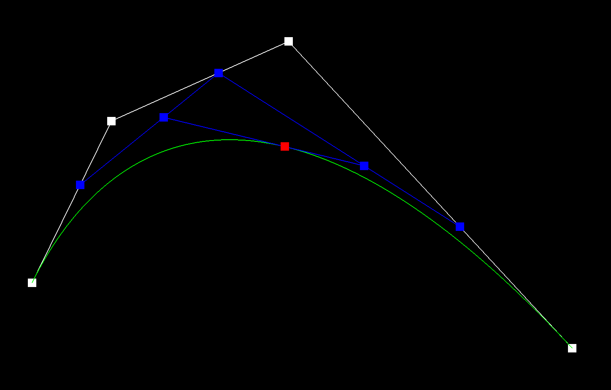

Our project models Bezier curves and surfaces as well as triangle meshes. De Casteljau’s algorithm is used to interpolate points on Bezier curves and surfaces. For triangle shading, we compute the area-weighted vertex normals of each vertex. We manipulate triangle meshes by implementing edge flip and split operations using the half-edge data structure. Lastly, we implement a mesh upsampling method called loop subdivision, to convert a coarse polygon mesh to a higher resolution mesh.
De Casteljau’s algorithm is a recursive algorithm that performs successive linear interpolation, using n control points and a parameter t. In each recursive step, we use linear interpolation to compute n-1 intermediate control points at the parameter t.
We apply this step recursively until we arrive at a final, single point that traces the Bezier curve as we vary parameter t from 0 to 1.
In part 1, we implemented the function BezierCurve::evaluateStep(points). Given a vector of 2D points, we apply De Casteljau’s algorithm by iterating through all the points, and applying the recursive step seen above. Given a vector of n points, this function returns a vector containing n-1 point(s).
Custom Bezier curve evaluation steps
Moving the original control points and modifying t
To evaluate a Bezier surface with de Casteljau’s algorithm, we first compute the intermediate control points defining the Bezier curve on each 2D “slice” of the 3D region. Then we interpolate across the curves in the 3rd dimension to arrive at the points on the final surface.
Given u and v, we evaluate the control points with parameter u, to obtain an intermediate vector of 3D points. These are the intermediate control points, which we evaluate on with parameter v.
We first defined BezierPatch::evaluateStep(points, t), which evaluates one step in de Casetljau’s algorithm in 3D at parameter t.
Then we wrote BezierPatch::evaluate1D(points, t), which will determine a single point from a vector of points by repeatedly calling evaluateStep until one final point remains.
Finally, BezierPatch::evaluate(u, v) evaluates the final Bezier patch at parameter (u, v). This function calls evaluate1D() on each control point on parameter u to obtain intermediate control points, which are then called on evaluate1D() on parameter v, giving us the final Bezier patch.
bez/teapot.bez evaluated by de Casteljau’s algorithm
We implemented area-weighed normal vectors at vertices. These vertex normals can be used for Phong shading, which provides better shading for smooth surfaces than flat shading.
For each vertex, we determined the area-weighted vertex normal by iterating through all faces neighboring the vertex. In each iteration, we obtain the three vertices of the triangle face (v0, v1, and v2), where v0 is the original given vertex. We calculate the normal by taking the cross product of the vectors (v1-v0) and (v2-v0), and calculate the area by obtaining half of the magnitude of the cross product. Then, we add this intermediate normal multiplied by its area to a running total. Finally, we normalize and return this sum of all area-weighted normals.
In our implementation of an edge flip operation, we modify all pointers of all mesh elements. A mesh element is a half-edge, vertex, edge, or face.
However, boundary edges are not flipped. We check if an edge is a boundary edge by checking if either neighbouring face is on the boundary with isBoundary(), and our function returns immediately.
We reassigned pointers of all mesh elements based on the following diagram:
For every element in the modified mesh, we set all of its pointers regardless of whether or not the pointer has changed to avoid errors and make it easier to debug.
For each vertex, face, and edge, we set its halfedge. For each halfedge, we use setNeighbors(next, twin, vertex, edge, face) to set all of the neighbors of this halfedge to the given values. If a halfedge is outside the two faces, we leave its next halfedge and corresponding face unchanged.
Finally, we return an EdgeIter corresponding to the flipped edge.
At first, after we wrote the first version of our code, flipping an edge would cause one of the resulting faces to disappear. This suggested that we may have incorrectly assigned some of the mesh element pointers. We realized that we incorrectly set the faces of the outermost halfedges to the inner faces instead of keeping them as the original faces. At the same time, we decided to also rewrite the pointer reassignments to ensure we hadn’t made any mistakes the first time.
We first assigned variables for all of the original mesh elements involved with the given edge. Then, we created the single new vertex, two new faces, three new edges, and six new halfedges. We set the position of the new vertex to the midpoint of the given edge. For each original and new vertex, edge, and face, we set its correct halfedge. For each original and new halfedge, we set all its corresponding mesh elements using the setNeighbors() function.
Our initial draft of the code didn’t fully work, so we restructured the code to do all pointer reassignment after the new mesh elements were all created and set the halfedge of every new and original element instead of only certain ones. We tried a few splits and flips on the GUI and thought we found a bug, but after confirming with a TA, we realized it was the expected behavior.
Mesh before edge splits
First, we computed new positions for all of the vertices in the original input mesh using the loop subdivision rule. For each original vertex, the updated position is (1 - n * u) * original_position + u * original_neighbor_position_sum, where n is the degree and u is 3/16 is n is 3 and 3/(8n) otherwise. We store the updated position in vertex->newPosition.
We then loop through each original edge, storing the edge in a vector that will be used later. The position of a new vertex created from splitting an edge is 3/8 * (A + B) + 1/8 * (C + D), where A and B are the adjacent vertices and C and D are the other vertices. We store the position of this eventual new vertex in edge->newPosition.
Then, we split every edge in the original mesh. We use the vector of original edges stored from the previous step, splitting each of these edges and assigning the new vertex position to the newPosition stored in the original edge.
Next, we flip new edges that connect an old and new vertex. We loop through the existing edges and store the new edges that satisfy this condition to a vector. Then, we flip each edge in the vector. In order to help determine whether an edge is new, we modified our previous code for the splitEdge() function to set isNew to true for the edges created from the split.
Finally, we copy the newPosition of each old and new vertex into its position field.
At first, the mesh looked really wrong when we did one iteration of loop subdivision, then subsequently crashed on further iterations. We realized that we forgot to convert some integers to floating-point numbers, resulting in incorrect values. We also realized that we incorrectly set one of the original edges as a new edge. After those two fixes, the loop subdivision seemed to be performed correctly.
Each iteration of loop subdivision results in the creation of more triangles in the mesh, making the mesh appear smoother. Sharp corners and edges tend to become more rounded with further iterations. Pre-splitting some edges preserves slightly more of the original shape, so sharp corners and edges do not get rounded as much.
These effects occur since each face of the cube is divided into two triangles along a single direction. For pre-processing, we split all edges that cross a cube surface so that the subdivision is performed symmetrically. This divides each face of the cube along all 4 directions instead of just one.